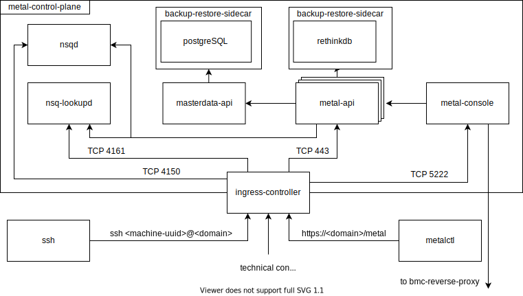

Components
The metal-stack is a compound of microservices written in Golang.
This page gives you an overview over which microservices exist, how they communicate with each other and where they are deployed.
Metal Control Plane
The foundation of the metal-stack is what we call the metal control plane. The metal control plane is typically deployed in a Kubernetes cluster and is not strictly required to run inside your data center. It even makes sense not to place the metal control plane in the same failure domain with your servers that you are going to manage with the metal-stack. The control plane does not depend on Kubernetes functionality, such that deployments to other target platforms are theoretically possible.
The control plane contains of a couple of essential microservices for the metal-stack including:
- metal-api The API to manage and control resources like machines, switches, operating system images, machine sizes, networks, IP addresses and more. The metal-api stores the state of these entities in a RethinkDB database. The metal-api also has it's own IP address management (go-ipam), which writes IP address and network allocations into a PostgreSQL backend.
- masterdata-api Manages tenant and project entities, which can be described as entities used for company-specific resource separation and grouping. Having these "higher level entities" managed by a separate microservice was a design choice that allows to re-use the information by other microservices without having them to know the metal-api at all. The masterdata gets persisted in a dedicated PostgreSQL database.
- metal-console Provides access for users to a machine's serial console via SSH. It can be seen as an optional component.
- nsq A message queuing system (not developed by the metal-stack) used for decoupling microservices and distributing tasks.
The following figure shows the relationships between these microservices:

Figure 1: The metal control plane deployed in a Kubernetes environment with an ingress-controller exposing additional services via service exposal.
Some notes on this picture:
- Users can access the metal-api with the CLI client called metalctl.
- Our databases are wrapped in a specially built backup-restore-sidecar, which is consistently backing up the databases in external blob storage.
- The metal-api can be scaled out in Kubernetes using replicas.
Partitions
A partition is our term for describing hardware in the data center controlled by the metal-stack with all the hardware participating in the same network topology. Typically, a partition spans a rack or a group of racks. Being in the same network topology causes the hardware inside a partition to build a failure domain. Even though the network topology for running the metal-stack is required to be redundant by design, you should consider setting up multiple partitions. With multiple partitions it is possible for users to maintain availability of their applications by spreading them across the partitions. Installing partitions in multiple data centers would be even better in regards of fail-safe application performance, which would even tolerate the meltdown of a data center.
We strongly advise to group your hardware into racks that are specifically assembled for running metal-stack. When using modular rack design, extending the amount of compute resources of a partition can easily be done by adding more racks to your partition.
The hardware that we currently support to be placed inside a partition is described in the hardware document.
How large you can grow your partitions and how the network topology inside a partition looks like is described in the networks section.
The metal-stack has microservices running on the leaf switches in a partition. For this reason, your leaf switches are required to run a Linux distribution that you have full access to. Additionally, there are a servers not added to the pool of user-allocatable machines, which are instead required for running metal-stack and we call them management servers.
The microservices running inside a partition are:
- metal-core (runs on leaf switches) Dynamically configures the leaf switch from information provided by the metal-api.
- pixiecore (runs on leaf switches, not developed by metal-stack) Provides the capability of PXE booting servers in the PXE boot network.
- metal-hammer (runs on a server when not allocated by user) An initrd, which is booted up in PXE mode, preparing and registering a machine. When a user allocates a machine, the metal-hammer will install the target operating system on this machine and kexec into the new operating system kernel.
- bmc-proxy (runs on management servers) Belongs to the metal-console, allowing user access to the machine's serial console. It can be seen as an optional component.
- ipmi-catcher (runs on management servers) Reports the ip addresses that are leased to ipmi devices together with their machine uuids to the metal-api. This provides machine discovery in the partition machines and keeps all IPMI interface access data up-to-date.
TODO: add figure
Entire Picture
TODO: add figure
By design, a partition only has very few ports open for incoming-connections from the internet. This contributes to a smaller attack surface and higher security of your infrastructure.